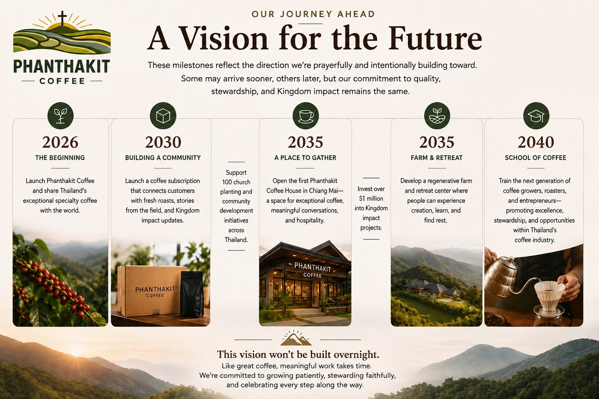

Every great story begins with a simple idea. Ours began with a belief that exceptional coffee and Kingdom purpose can grow side by side.
When people think of great coffee, they often think of Colombia, Ethiopia, or Brazil. For us, Thailand has always meant something more.
Long before Phanthakit Coffee was founded, its founders, Yohei Fukuma from Japan and Alan Conceição from Brazil, found themselves serving in Northern Thailand through Christian ministry. What began as a calling to a people and a place eventually grew into a vision to use a coffee business to bless others.
Today, we're honored to share the remarkable specialty coffee of Northern Thailand with the world, while continuing to invest in the communities that first welcomed us.

Coffee wasn't the reason we came to Thailand. People were.
While serving in Northern Thailand, we met Pastor Day, a local pastor whose family comes from a remote mountain region where coffee has been grown for generations. The families there cultivate high-quality Arabica coffee using traditional methods—carefully tending the trees, harvesting by hand, and processing every bean with remarkable care. Yet despite producing exceptional coffee, many have limited access to larger markets where their hard work can be fairly valued.
As we got to know these families, we saw an opportunity. Not simply to sell coffee, but to help connect their harvest with coffee lovers around the world. Phanthakit Coffee was born from that vision.
Today, every bag of coffee represents the craftsmanship of these farming families and helps create opportunities to strengthen local communities. Through our partnership with Pastor Day, we also support local churches, equip pastors, and invest in new church planting initiatives across Northern Thailand. For us, coffee is more than a product—it's a bridge between the people who grow it and the people who enjoy it.
"For years, our families have grown coffee with great care. We prayed that one day more people would discover it. Phanthakit has become part of the answer to that prayer." — Pastor Day

These four words guide every decision we make. Harvest Hope reminds us to cultivate excellence, steward God's creation well, and create products people genuinely love. Build the Kingdom reminds us that success isn't measured only by profit, but by lives transformed through faithful generosity.
We believe business can be a force for lasting good. That's why we've committed to investing 20% of Phanthakit's profits into Gospel-centered ministry and community development across Northern Thailand and Southeast Asia. Through trusted local partnerships, including Pastor Day and other local church leaders, every purchase helps strengthen the work already happening on the ground.
These milestones reflect the direction we're prayerfully and intentionally building toward. Some may arrive sooner, others later, but our commitment to quality, stewardship, and Kingdom impact remains the same.


Whether you purchase a bag of coffee, pray for our work, or simply follow along, we're grateful you've chosen to be part of the story. Together, we're harvesting hope and building the Kingdom—one cup at a time.
Join Our Community